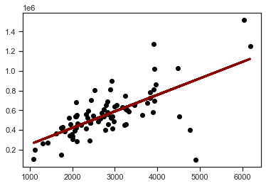
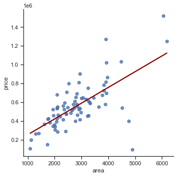

Statsmodels¶
Setup¶
%matplotlib inline
import pandas as pd
import seaborn as sns
import matplotlib.pyplot as plt
import statsmodels.formula.api as smf
from statsmodels.tools.eval_measures import mse, rmse
sns.set_theme(style="ticks", color_codes=True)
Data preparation¶
See notebook 10a-application-model-data-exploration.ipynb for details about data preprocessing and data exploration.
ROOT = "https://raw.githubusercontent.com/kirenz/modern-statistics/main/data/"
DATA = "duke-forest.csv"
df = pd.read_csv(ROOT + DATA)
# Drop irrelevant features
df = df.drop(['url', 'address', 'type'], axis=1)
# Convert data types
df['heating'] = df['heating'].astype("category")
df['cooling'] = df['cooling'].astype("category")
df['parking'] = df['parking'].astype("category")
# drop column with too many missing values
df = df.drop(['hoa'], axis=1)
# drop remaining row with missing value
df = df.dropna()
Data splitting¶
train_dataset = df.sample(frac=0.8, random_state=0)
test_dataset = df.drop(train_dataset.index)
Modeling¶
Train the model¶
# Fit Model
lm = smf.ols(formula='price ~ area', data=train_dataset).fit()
# Short summary
lm.summary().tables[1]
| coef | std err | t | P>|t| | [0.025 | 0.975] | |
|---|---|---|---|---|---|---|
| Intercept | 8.593e+04 | 6.21e+04 | 1.383 | 0.171 | -3.78e+04 | 2.1e+05 |
| area | 167.7007 | 20.741 | 8.085 | 0.000 | 126.391 | 209.010 |
# Full summary
lm.summary()
| Dep. Variable: | price | R-squared: | 0.462 |
|---|---|---|---|
| Model: | OLS | Adj. R-squared: | 0.455 |
| Method: | Least Squares | F-statistic: | 65.37 |
| Date: | Tue, 04 Jan 2022 | Prob (F-statistic): | 7.56e-12 |
| Time: | 22:11:17 | Log-Likelihood: | -1053.3 |
| No. Observations: | 78 | AIC: | 2111. |
| Df Residuals: | 76 | BIC: | 2115. |
| Df Model: | 1 | ||
| Covariance Type: | nonrobust |
| coef | std err | t | P>|t| | [0.025 | 0.975] | |
|---|---|---|---|---|---|---|
| Intercept | 8.593e+04 | 6.21e+04 | 1.383 | 0.171 | -3.78e+04 | 2.1e+05 |
| area | 167.7007 | 20.741 | 8.085 | 0.000 | 126.391 | 209.010 |
| Omnibus: | 26.589 | Durbin-Watson: | 2.159 |
|---|---|---|---|
| Prob(Omnibus): | 0.000 | Jarque-Bera (JB): | 107.927 |
| Skew: | -0.862 | Prob(JB): | 3.66e-24 |
| Kurtosis: | 8.499 | Cond. No. | 9.16e+03 |
Notes:
[1] Standard Errors assume that the covariance matrix of the errors is correctly specified.
[2] The condition number is large, 9.16e+03. This might indicate that there are
strong multicollinearity or other numerical problems.
To obtain single statistics:
# Adjusted R squared
lm.rsquared_adj
0.4553434818683253
# R squared
lm.rsquared
0.4624169431427626
# AIC
lm.aic
2110.625966301898
train_dataset.info()
<class 'pandas.core.frame.DataFrame'>
Int64Index: 78 entries, 26 to 73
Data columns (total 9 columns):
# Column Non-Null Count Dtype
--- ------ -------------- -----
0 price 78 non-null int64
1 bed 78 non-null int64
2 bath 78 non-null float64
3 area 78 non-null int64
4 year_built 78 non-null int64
5 heating 78 non-null category
6 cooling 78 non-null category
7 parking 78 non-null category
8 lot 78 non-null float64
dtypes: category(3), float64(2), int64(4)
memory usage: 6.0 KB
# Add the regression predictions (as "pred") to our DataFrame
train_dataset['y_pred'] = lm.predict()
# MSE
mse(train_dataset['price'], train_dataset['y_pred'])
31402336646.61913
# RMSE
rmse(train_dataset['price'], train_dataset['y_pred'])
177207.04457390832
# Plot regression line
plt.scatter(train_dataset['area'], train_dataset['price'], color='black')
plt.plot(train_dataset['area'], train_dataset['y_pred'], color='darkred', linewidth=3);

# Plot with Seaborn
import seaborn as sns
sns.set_theme(style="ticks")
sns.lmplot(x='area', y='price', data=train_dataset, line_kws={'color': 'darkred'}, ci=False);

sns.residplot(x="y_pred", y="price", data=train_dataset, scatter_kws={"s": 80});

Validation with test data¶
# Add regression predictions for the test set (as "pred_test") to our DataFrame
test_dataset['y_pred'] = lm.predict(test_dataset['area'])
test_dataset.head()
| price | bed | bath | area | year_built | heating | cooling | parking | lot | y_pred | |
|---|---|---|---|---|---|---|---|---|---|---|
| 9 | 650000 | 3 | 2.0 | 2173 | 1964 | Forced air, Electric, Gas | other | 0 spaces | 0.73 | 450348.456333 |
| 12 | 671500 | 3 | 3.0 | 2200 | 1964 | Other, Electric, Gas | central | Carport, Covered | 0.51 | 454876.375736 |
| 21 | 645000 | 4 | 4.0 | 2300 | 1969 | Other, Gas | central | Garage - Attached, On-street, Covered | 0.47 | 471646.447601 |
| 25 | 603000 | 4 | 4.0 | 3487 | 1965 | Other, Gas | central | Garage - Attached, Covered | 0.61 | 670707.200633 |
| 36 | 615000 | 3 | 3.0 | 2203 | 1954 | Heat pump, Electric | other | 0 spaces | 0.63 | 455379.477892 |
# Plot regression line
plt.scatter(test_dataset['area'], test_dataset['price'], color='black')
plt.plot(test_dataset['area'], test_dataset['y_pred'], color='darkred', linewidth=3);

sns.residplot(x="y_pred", y="price", data=test_dataset, scatter_kws={"s": 80});

# RMSE
rmse(test_dataset['price'], test_dataset['y_pred'])
119345.88525637302
Multiple regression¶
lm_m = smf.ols(formula='price ~ area + bed + bath + year_built + cooling + lot', data=train_dataset).fit()
lm_m.summary()
| Dep. Variable: | price | R-squared: | 0.626 |
|---|---|---|---|
| Model: | OLS | Adj. R-squared: | 0.595 |
| Method: | Least Squares | F-statistic: | 19.83 |
| Date: | Tue, 04 Jan 2022 | Prob (F-statistic): | 1.86e-13 |
| Time: | 22:11:18 | Log-Likelihood: | -1039.1 |
| No. Observations: | 78 | AIC: | 2092. |
| Df Residuals: | 71 | BIC: | 2109. |
| Df Model: | 6 | ||
| Covariance Type: | nonrobust |
| coef | std err | t | P>|t| | [0.025 | 0.975] | |
|---|---|---|---|---|---|---|
| Intercept | -2.944e+06 | 2.26e+06 | -1.302 | 0.197 | -7.45e+06 | 1.56e+06 |
| cooling[T.other] | -1.021e+05 | 3.67e+04 | -2.778 | 0.007 | -1.75e+05 | -2.88e+04 |
| area | 111.8295 | 25.915 | 4.315 | 0.000 | 60.156 | 163.503 |
| bed | 5121.5208 | 3.1e+04 | 0.165 | 0.869 | -5.68e+04 | 6.7e+04 |
| bath | 2.678e+04 | 2.94e+04 | 0.910 | 0.366 | -3.19e+04 | 8.55e+04 |
| year_built | 1491.1176 | 1157.430 | 1.288 | 0.202 | -816.732 | 3798.968 |
| lot | 3.491e+05 | 8.53e+04 | 4.094 | 0.000 | 1.79e+05 | 5.19e+05 |
| Omnibus: | 27.108 | Durbin-Watson: | 1.919 |
|---|---|---|---|
| Prob(Omnibus): | 0.000 | Jarque-Bera (JB): | 112.999 |
| Skew: | -0.874 | Prob(JB): | 2.90e-25 |
| Kurtosis: | 8.632 | Cond. No. | 4.57e+05 |
Notes:
[1] Standard Errors assume that the covariance matrix of the errors is correctly specified.
[2] The condition number is large, 4.57e+05. This might indicate that there are
strong multicollinearity or other numerical problems.